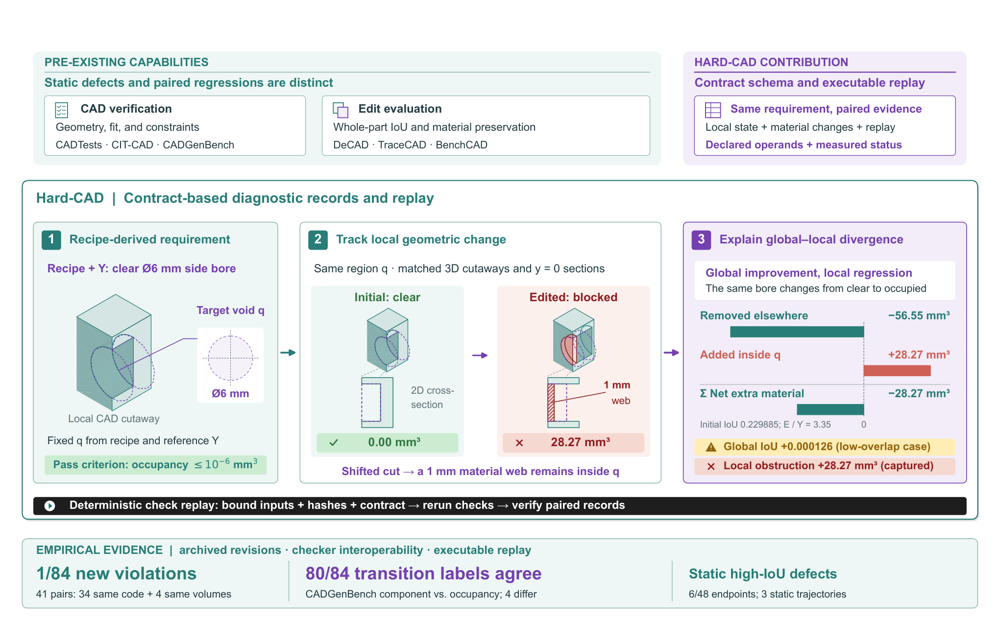
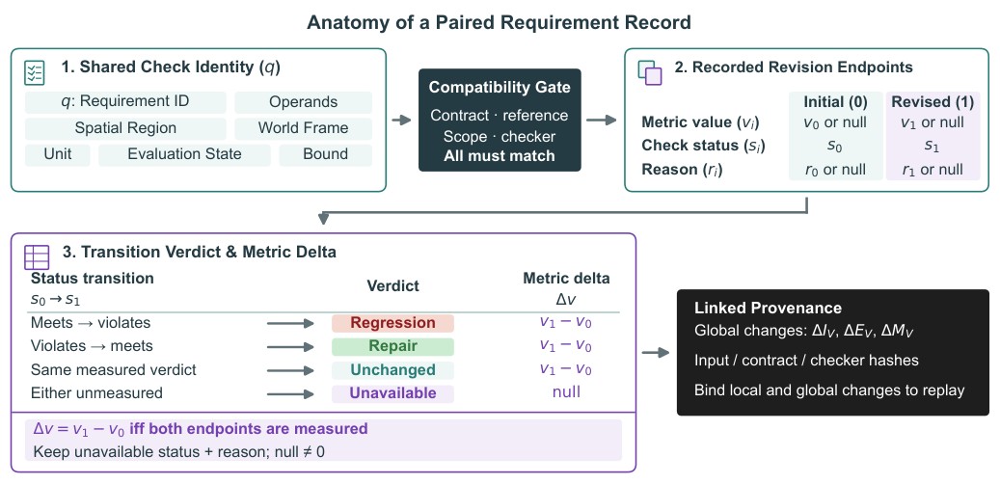
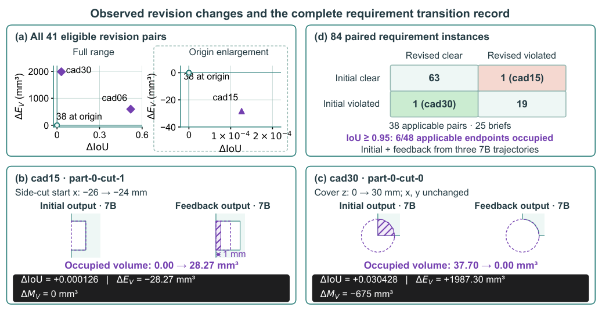
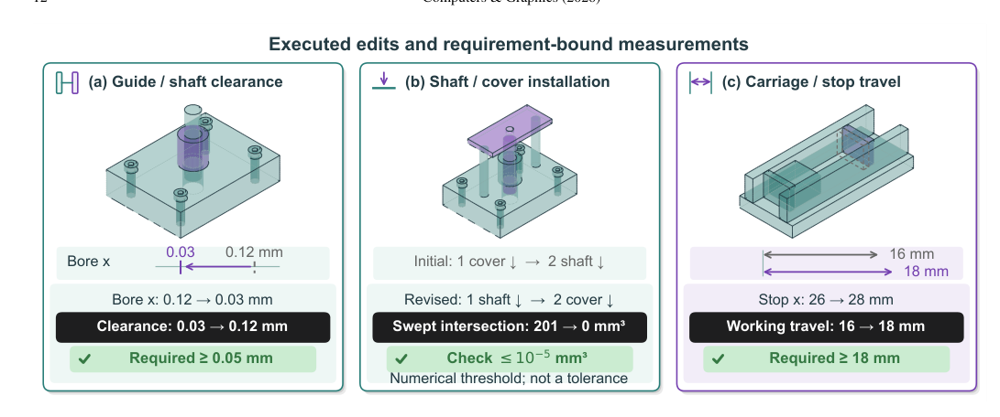

Are the required parts present?
A missing guide can make a visually plausible assembly incomplete.
See how a check is specified →“Don't just measure IoU. Diagnose the requirement.”
The graphical abstract from the submitted manuscript traces the relationship between an explicit requirement, a CAD revision and its paired diagnostic record.

The submitted graphical abstract. Click to open the figure at full size. The cad15 example is a low-overlap case; the static high-IoU observations are a separate result.
Hard-CAD makes that difference visible: name the requirement, measure it in each revision, and keep the evidence together.
The required empty region became occupied, while global IoU increased.
Explore the evidence ↗02 / CONTROLLEDIs the fit still within its bound?0.03 < 0.05 mmThe nominal clearance fails its requirement even at IoU ≈ 0.99946.
Explore the evidence ↗03 / CONTROLLEDCan the prescribed path get there?0 / ≈ 201 mm³Final interference is zero; the cover-first insertion sweep intersects the cover.
Explore the evidence ↗Learn why shape similarity, a functional opening, clearance and an assembly path answer different questions. Start with the interactive examples.
Try the clearance example →Turn a critical hole, gap or assembly path into a declared check; compare its measurement across design revisions. Pilot it on real parts and tolerances before drawing production conclusions.
See the contract workflow →Build on requirement-level paired records: test semantic feature binding, compare repair controllers under shared budgets, or add rotation and physical models.
Inspect evidence and open questions →The first case is an observed revision; the other two are controlled constructions. The applications are future directions, not validated industrial outcomes.
A generated model may look convincing, yet an engineer still has to check the parts, the interfaces and how the assembly moves. As generated designs multiply, that review is difficult to scale.
In an engineering discussion, this direction received positive feedback. Turning it into a reliable workflow is the work ahead.
A missing guide can make a visually plausible assembly incomplete.
See how a check is specified →A bore can be in the wrong place even when overall overlap is high.
Explore the clearance example →A valid final position can hide an obstruction along a prescribed insertion path.
Compare insertion paths →Follow the loop. The first three steps are grounded in the paper; automated iteration is a research direction.
An engineer identifies the parts, dimensions and conditions that matter for the task.
Explore the method →Requirement-level feedback could help an AI propose a repair and check what changed, including previously satisfied requirements. Whether this saves review time or improves real manufacturing outcomes needs controlled studies and real-world validation.
The earlier engineering presentation framed completeness, geometry and action order as separate questions. This submitted paper evaluates declared component witnesses, geometry and prescribed motion checks; it does not establish a general action-order score or autonomous self-improvement.
Existing CAD benchmarks evaluate geometric similarity, requirement satisfaction, and edit preservation using coarse voxel/mesh overlap or point-cloud Chamfer distance. However, in precision mechanical engineering, a generated model can preserve 99% of its occupied material while placing a mounting bore on the wrong axis, blocking a vital fluid passage, or fusing components that should remain distinct. An overlap score describes a global geometric relation; it does not specify which local requirements are satisfied.
Hard-CAD brings these measurements into a contract-based diagnostic record: it pairs the same declared requirement across revisions, links local changes to global material differences, retains unavailable checks, and supports executable replay. We analyzed outputs from 30 modeling briefs under two local agent conditions, obtaining 41 eligible revision pairs. In one revision, a previously clear side-cut gains 28.27 mm³ while intersection-over-union (IoU) improves and total extra material decreases, because more material is removed elsewhere. In another, a void clears while extra material grows. The paired records identify the affected requirements and quantify both changes.
A guided account of the paper, with definitions, controlled examples and the scope of each result. Expand a panel to explore the argument.
The record binds a declared requirement to its operands, frame, units, state and bound, then retains the measurement and availability at both revisions. The pairing is an ordinary join by requirement identity; the contribution is the explicit contract, availability semantics and replayable record—not a new matching algorithm.
Requirement checks, geometric preservation and repair feedback already exist. Hard-CAD combines declared requirement transitions with global material changes; an ordinary join of external checker outputs reproduces 80 of 84 transition labels. Four differences reflect different acceptance criteria.
The results describe the studied cohort and should be interpreted within its sampling and protocol. Feedback comparisons describe observed outcomes, while dimension extraction and geometric entity binding are evaluated separately. Measurements retain an explicit availability status when a required operand is missing.
We invite researchers in CAD, geometric computing, engineering verification and agent repair to examine the contracts, replay the checks and build independently grounded evaluations.
Explore the project ↗Explore related work, the design of Hard-CAD, and the evidence connecting them.
Open questions from the manuscript
Connections indicate conceptual relationships described in the paper; they do not imply a historical lineage, direct comparison, or measured superiority.
Follow the design decisions that make a change interpretable. Each stage adds information needed by the next.
A requirement ID and declared entities, frame, units, state or path, operator and bound define what can be checked.
Illustration follows the recorded cad15 side-cut; its initial overall IoU is low. Display images do not perform the geometry calculation.
Global IoU and extra volume summarize different geometric changes. In this low-overlap example, both improve while one declared local requirement becomes violated:
| Evaluation Metric | Initial Candidate | Revised Candidate | Delta / Observed Change | Conclusion |
|---|---|---|---|---|
| B-Rep IoU | 0.229885 | 0.230011 | +0.000126 ↑ | "Model improved" |
| Total Extra Volume | 39,715.73 mm³ | 39,687.45 mm³ | -28.27 mm³ ↓ | "Less error volume" |
Req. 1: part-0-cut-0 |
FAIL (38,059 mm³) | FAIL (38,003 mm³) | -56.55 mm³ trimmed | Still failing |
Req. 2: part-0-cut-1 (Side-Cut) |
PASS (0.00 mm³) | FAIL (28.27 mm³) | +28.27 mm³ filled | Critical Regression ✗ |
Scroll sideways to see all columns →
Table 1. Paired diagnostic measurements for brief cad15. Total extra material decreased by approximately 28.27 mm³ overall, masking that the agent filled an existing valid side cut.


Both images show the same y = 0 section. The divider reveals the initial image on the left and the revision on the right; it does not deform the part. Follow the upper-right side-cut: the required empty region becomes occupied in the revision.
Inspect display meshes derived from the CAD geometry evaluated in the manuscript; measurements are computed from B-Rep solids. Rotate with left mouse button, pan with right mouse button, and zoom with scroll wheel.
IoU improved +0.000126, but the declared side-cut filled in with 28.27 mm³ unwanted solid material.
Translucency is a display aid for the selected mesh; measurements come from the B-Rep, not the rendered image.
In the paper's controlled assembly, the final solids do not interfere. The prescribed insertion path can still cross the cover. Compare the two declared assembly orders.
Conceptual animation, not the tested CAD geometry or a physics simulation. The red marker illustrates a swept-path conflict, not its spatial extent.
With the cover in place first, the prescribed shaft insertion crosses solid material, although the final pose has zero interference.
A local cut changed from clear to occupied; separately, a prescribed insertion path intersected the cover. These are geometric checks on specified models and states.
An engineer could flag a blocked passage or an obstructed assembly sequence for review before fabrication, alongside the global shape score. The actual consequence depends on the part's function and process.
Validate feature and coordinate binding on real parts, include manufacturing tolerances and representative assembly paths, then study inspection and production outcomes. Loads, deformation and rotational contact need additional models.
These are possible applications, not measured industrial savings or a validated manufacturing deployment.
Move the axis of the controlled shaft–guide example. The cross-section is schematic; the curve is calculated from the paper’s analytical construction.
Schematic, not to scale. The model applies only before contact (e < 0.15 mm).
The bore radius is 5.15 mm and the shaft radius is 5.00 mm. The nominal clearance falls linearly as the axes separate.
Nominal geometry only. Independent ±0.01 mm radius bounds give a 0.01 mm worst-size gap at e = 0.12 mm; these are design bounds, not confidence intervals.
Let V ≈ 91,975.16 mm³ be the equal occupied volume and Δ(e) the symmetric difference. Then I(e) = (2V − Δ)/(2V + Δ), where Δ = 2h[πR² − A(R,e)] and A(R,e) = 2R² arccos(e/2R) − (e/2)√(4R² − e²). Here h = 20 mm and R = 5.15 mm. This derivation is restricted to the noncontact interval.
Hard-CAD decouples requirement evaluation into three deterministic phases: formal contract specification, analytical B-Rep kernel measurement, and paired differencing.

Figure 2. Execution architecture. Human design briefs are codified into declarative contracts specifying coordinate frames, units, and geometric regions. The FreeCAD Open CASCADE kernel computes solid differences under declared numerical conditions, producing diagnostic artifacts.
Requirements are declared as YAML schemas with explicit coordinate frames (world/local), units (mm), and keep-out or bounding geometries.
B-Rep Boolean operations compute geometric quantities; 10⁻⁶ mm³ is the cut-occupancy numerical check threshold, not a manufacturing tolerance. Display tessellation does not enter these volume checks.
Records identify requirement transitions (PASS → FAIL) alongside global signed material changes, isolating defect regressions from repairs.
Across 30 briefs, the analysis retains 41 eligible revision pairs and 84 paired cut requirements. The results describe this cohort and do not estimate prevalence in industrial practice:

Figure 3. Cohort scatter analysis. Change in global IoU versus signed volume modification across 41 revision pairs.

Figure 4. Agent repair trajectories. The controlled examples demonstrate edits, checks, and replay; feedback comparisons do not establish repair gains.
The 84 requirement transitions are paired instances across 38 applicable revision pairs and 25 briefs. They are not 84 independent industrial mechanisms.
Select a row to inspect its meaning. Counts are from the requirement-level analysis, not the separate pair-level transition table.
Sixty trajectories were generated from 30 authored briefs under two local agent conditions. Forty-one pairs passed the primary eligibility criteria; 38 had applicable cut requirements. Of the 41 pairs, 34 retained identical program hashes and four more were volumetrically unchanged. The feedback experiments use different cohorts and budgets and cannot be pooled into these counts.
A retrospective 22-document audit found 13 explicit-unit dimension triples and recovered 12 of them with no unmatched outputs. The same cohort informed the extraction rule; this is not held-out semantic binding accuracy. Product, feature and frame identification remain open.
Future work needs independently specified occurrences, features and states, ideally with native constraints or semantic PMI as held-out references. A controlled repair study should share its first proposal, hold budget and controller fixed, and include withheld checks. Rotation, deformation, loads and manufacturing require further state models and checks.
Choose a path: open the recorded reports immediately, or use the full evaluator source and a compatible FreeCAD Python interpreter to replay the geometry.
A browser is enough to open the bundled cad15 and cad30 reports. These files let you inspect recorded outcomes without recomputing geometry.
3D comparison studio ↗ Interactive evidence replay ↗ Process pump demo → cad15 report ↗ cad30 report ↗The full evaluator source is required: the pinned website repository contains the page and example bundles, but no installable SDK. Obtain an authorized evaluator source checkout or an approved public package before following the steps below.
For the full CAG test and evidence audits, the source guide additionally lists pytest ≥ 8, jsonschema ≥ 4.18 and PyMuPDF ≥ 1.24. Record Python and package versions; these minimum versions are not a complete locked environment.
Use the Agent prompt tab for an environment-aware, copyable setup request. It asks the agent to identify the source and CAD runtime, use fresh outputs, and report any missing prerequisites.
# Run from the full evaluator source checkout, not the website-only repository. python -m venv .venv # Activate .venv using the command for your operating system. python -m pip install ".[yaml]" # Replace FREECAD_PYTHON with a Python executable that imports FreeCAD and Part. # Choose a new output directory. Quote the executable path if it contains spaces. python -m hardcad demo --output paper-demo --cad-python FREECAD_PYTHON # Open paper-demo/index.html and inspect the recorded outcomes.
Please help me reproduce the recorded Hard-CAD cad15 and cad30 examples on this computer. 1. Inspect the available files and documentation. Identify whether I have the full evaluator source (including pyproject.toml and the hardcad package) or only the website/example bundle. If evaluator source is missing, explain how to obtain an authorized copy and stop before installation. 2. Check Python (3.10 or newer), create an isolated environment, and install the evaluator from its local source with YAML support. Record actual Python and dependency versions. 3. Locate a FreeCAD Python executable and verify that it can import FreeCAD and Part. The documented development configuration is FreeCAD 1.1.1 / Open CASCADE 7.8.1 on Windows. If it is unavailable, report what is missing rather than guessing a path. 4. Run the documented recorded-example demo using that executable and a new output directory. Open the resulting index.html and summarize the cad15 and cad30 measurements, statuses, output paths, and any failures. Distinguish an intentionally failing candidate requirement from a replay or infrastructure failure. 5. Cite the local documentation and record the commands and versions used. Do not use private corpora or paid model calls, overwrite existing results, modify a scorer, publish anything, or push changes without my explicit instruction.
from hardcad import diagnose
# Run contract diagnostics against candidate and reference geometry
report = diagnose(
candidate="candidate_v2.step",
reference="reference.step",
brief="brief.yaml",
cad_python="FREECAD_PYTHON" # Replace with a FreeCAD-capable Python executable
)
# Export interactive report
report.to_html("diagnosis.html")
print(report.summary())
schema_version: hardcad.contract.v1
unit: mm
frame: world
state: recorded_static_pose
requirements:
- id: part-0-cut-0
kind: keep_out
region:
kind: box
origin: [-23, -18, 2]
size: [46, 36, 23]
tolerance_mm3: 1.0e-06
- id: part-0-cut-1
kind: keep_out
region:
kind: cylinder
origin: [-25, 0, 12]
radius: 3
height: 3
axis: [1, 0, 0]
tolerance_mm3: 1.0e-06
@misc{hardcad2026,
author = {Huang, Hikoyan and Zhang, Jiayao},
title = {Hard-CAD: Contract-Based Diagnostics for Generated CAD Geometry},
year = {2026},
url = {https://hard-cad.github.io/hard-cad/},
note = {Submitted manuscript}
}